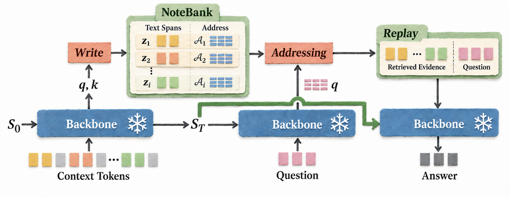

1 Write
Save selected original text as each chunk is processed—before the question is known.
Linear attention promises the efficiency needed for long-context language modelling, yet its fixed-size recurrent state must simultaneously support ongoing computation and preserve information from an ever-growing history. This coupling has reinforced a prevailing view that the state’s memory capacity defines the model’s long-context capability. We challenge this presumed ceiling: recurrent computation need not bear the full burden of long-term storage. We introduce NoteBank, a sparse episodic memory that archives selected text before future queries are known, uses the backbone’s native features for writing and addressing, and reads retrieved evidence through its native forward computation via replay. This training-free, plug-and-play interface requires no external embedding model, separately trained retriever, or separate neural reader. At one million tokens, it raises Gated DeltaNet’s mean accuracy across six RULER retrieval tasks from 1.7% to 70.3%, with no observed significant retrieval degradation from 4K to 1M tokens. This recovery adds ≤0.025% to analytical FLOPs, with persistent context storage approximately 1/2,600 that of a Transformer’s full MHA KV cache at matched width, depth, and precision. Experiments extend from three 1.3B recurrent backbones to Mamba-2-8B and post-trained Qwen3.5-9B, demonstrating gains on LongBench v1/v2 and MemoryAgentBench. Together, these results show that sparse evidence storage and native replay can substantially expand the long-context capability of pretrained linear attention models while retaining the efficiency of recurrent computation.
At 1M tokens, GDN retrieval accuracy rises from 1.7% to 70.3%—with frozen weights.

Save selected original text as each chunk is processed—before the question is known.
Use the question’s native features to find relevant notes.
Read the retrieved notes, then the question, through the same backbone.
Million-token memory, at a small additional cost.
additional FLOPs at 1M-token context
Analytical FLOPs, not latency.
State + archive vs. matched full-MHA KV cache. Excludes weights and workspace.
· Drag either axis to explore. Recorded analytical costs; state + archive storage.
Plug-and-play · No additional training
Beyond synthetic retrieval: stronger document QA and agent memory.
+3.2 percentage points
+1.1 percentage points
Scores (%) · LongBench v2: 375 QA/dialogue examples · MemoryAgentBench: 2,100 QA examples.
@misc{nanbo2026historyreplaysitselfunleashing,
title={History Replays Itself: Unleashing Long-Context Capability in Linear Attention},
author={Li Nanbo and Firas Laakom and Yilan Zhang and Piotr Piękos and Yimeng Chen and Liangyu Wang and Yifan Xu and Mateusz Ostaszewski and Dandan Guo and Wenyi Wang and Yanning Dai and Yuhui Wang and Jürgen Schmidhuber},
year={2026},
eprint={2610.15715},
archivePrefix={arXiv},
primaryClass={cs.AI},
url={https://arxiv.org/abs/2610.15715},
}arXiv:2610.15715 [cs.AI]
The research reported in this publication was supported by funding from King Abdullah University of Science and Technology (KAUST) - Center of Excellence for Generative AI, under award number 5940.